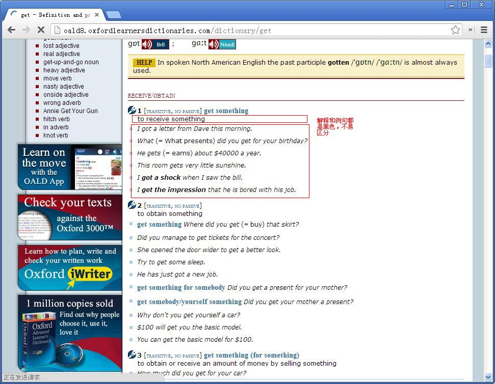
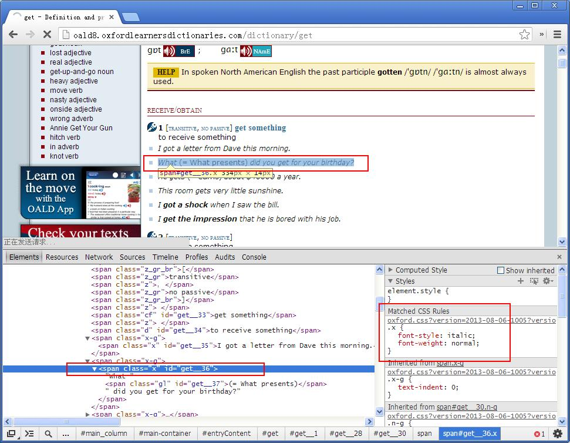

一、介绍
本插件是一个自定义搜索引擎集合,可以定制任何网站上基于关键词的搜索功能.
使用时,既可以使用插件按钮输入文本来搜索:
也可以在浏览网页时选中文本、使用右键菜单来搜索:
二、搜索设置
1.搜索链接
一般来说,一个网站上的搜索过程是这样的：首先在输入框中输入关键词,点击按钮,接着浏览器会将关键词等参数发给网站的主机,然后网站那边就会打开一个指向结果的页面.
具体的实现方式有两种：GET方式和POST方式.
GET方式的特点是,关键词等参数会包含在打开的链接中.
目前大部分网站用的是GET方式.比如豆瓣,在豆瓣读书中搜索"Java",搜索结果页面的URL是：
http://book.douban.com/subject_search?search_text=Java&cat=1001
很明显,这个URL包含了两个参数：search_text和cat.
其中search_text的值就是关键词Java.
插件中GET方式的设置很简单,只要在“链接URL”一栏中,将具体的关键词替换成%%keyword%%即可.
其余的参数是何含义我们不得而知,姑且在填写时不做修改.
有一点要说明的是,标准的URL是不含有汉字等国际化字符的,如果输入的关键词有汉字,搜索结果页面的URL中有可能会将汉字转码掉.
比如在新浪微博中搜索"奇葩",结果页面的URL是
http://s.weibo.com/weibo/%25E5%25A5%2587%25E8%2591%25A9?topnav=1&wvr=5&b=1
这里"奇葩"被转码成了%25E5%25A5%2587%25E8%2591%25A9
但这并不影响插件的设置.插件中仍将被转码的关键词替换成%%keyword%%即可.
POST方式的特点是,输入的关键词不包含在链接中,而是以别的方法提交给网站的主机.
如果我们在一个网站的搜索结果页面的URL中找不到关键词字样,那么这个网站很可能是以POST方式提交参数的.
下面以一个在线汉语词典网站(http://www.zdic.net)为例,
说明如何找出并填写POST方式的参数:
a.首先在Chrome中打开该网页的主页,然后右击鼠标,弹出菜单,点击"审查元素".在新弹出的窗口中,选择“Network”一栏.
b.然后在主页中,随便输入一个词（比如查一下"奇葩"）,点击按钮去查询.
c.搜索结果页面打开后,观察a.中的"Network"一栏,这一栏现在列出了很多文件.
它们都是浏览器在打开搜索结果页面的过程中,所访问的文件.
一般其中的第一个文件就是POST方式的链接.
我们点击它,然后右侧就会列出关于该文件的详细信息.
这里的重要信息有：Request URL 、Request Method 、Form Data,其中Form Data就是那些看不见的参数.
现在把Request URL 、Form Data一一填写到设置项中即可.其中关键词仍替换成%%keyword%%

2.组合搜索
组合搜索功能可以满足这样一些需求：
想让搜索结果页面过滤掉没用的内容（比如广告等）,只显示有用的内容；
想同时查询好几家网站对某个关键词的搜索,并让它们的搜索结果显示在同一页上,便于比较；
不喜欢原网站的排版,想定制自己的排版
下图是一个组合搜索的例子.我想查英语单词,于是同时查了
在线牛津高阶英语词典、
在线韦氏词典和
在线金山词霸这三家网站的单词,
并屏蔽掉了他们的广告,稍微修改了排版.

步骤
(1)创建
首先是建一个组合搜索.
然后为这个组合搜索添加子项.
这样同一个组合搜索下的所有子项都会显示在一个页面上.
(2)过滤内容
一个HTML网页从结构上说是由许多个方框组成的.每个方框内部又可以包含若干个子方框.
若想筛选一个页面上的内容,就要找出该内容所对应的方框.
我们以一个日语词典网站(http://dict.hjenglish.com)为例,说明如何过滤和筛选页面的内容.
原网站的搜索结果如下图,现在我们想只筛选图中红笔标注的内容.

在页面上右击鼠标,弹出菜单,点击"审查元素",这次在弹出的窗口中选择"Elements"一栏.
我们可以看到网页的源代码.
在源代码上移动鼠标,鼠标每移动到一个方框所对应的代码,网页中该方框就会被用半透明的颜色标识出来.
通过这种方式,我们查出,要筛选的内容对应的代码标签是<div id="jp_comment">.
于是在设置页面的"筛选标签"上填写<div id="jp_comment">即可
设置后使用插件搜索的效果如下图:
如果想筛选原页面上的多处内容.那么把每个标签都找出并都填上.
如果不想做筛选，那么"筛选标签"一栏就空着不填.
(3)定制排版
可以通过注入CSS代码的方式，修改原网站页面的样式、排版。
如果对CSS不了解，请参考这里,作为学习CSS的网站.
以在线牛津高阶英语词典为例.下图是原网站的排版.

现在想把例句的颜色改成蓝色，以便与解释区分开.
在页面上右击鼠标,弹出菜单,点击"审查元素",在弹出的窗口中查看"Elements"一栏.Elements的右边是CSS样式表.
寻找发现,例句对应的标签是<span class="x">

于是在插件的设置中填写附加的CSS：
.x{
font-style:normal;
color: blue;
}
这段代码将会注入到搜索结果页面中。
设置后的效果图: